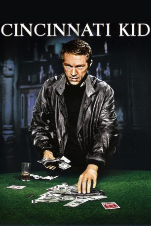

#1276 Cincinnati Kid
Alternativ: The Cincinnati Kid
 
 IMDB-Wertung: 7.3 / 10
IMDB-Wertung: 7.3 / 10  Metascore: 0
Metascore: 0 
New Orleans 1936: Der junge Pokerspieler Eric, genannt "Cincinnati Kid", gilt bereits als der beste der Stadt - doch er will unbedingt ganz nach oben. Der Weg dorthin führt ihn zu einem schicksalhaften Duell mit Lancy Howard, dem ungekrönten König der Karten.
Jahr: 1965
Dauer: 102 Minuten
FSK: 12
Land: USA Studio: MGMTonspuren:
Untertitel:
Auflösung: 1080p (1904x1080) Größe: 8130 MB
Genre: Drama
Regisseur:  Norman Jewison
Norman Jewison
Drehbuch: Richard Jessup, Ring Lardner Jr., Terry Southern
Soundtrack: Lalo Schifrin
Darsteller:
 Steve McQueen als The Cincinnati Kid
Steve McQueen als The Cincinnati Kid Ann-Margret als Melba
Ann-Margret als Melba Karl Malden als Shooter
Karl Malden als Shooter Tuesday Weld als Christian
Tuesday Weld als Christian Edward G. Robinson als Lancey Howard
Edward G. Robinson als Lancey Howard Joan Blondell als Lady Fingers
Joan Blondell als Lady Fingers Rip Torn als Slade
Rip Torn als Slade Jack Weston als Pig
Jack Weston als Pig- Cab Calloway als Yeller
 Jeff Corey als Hoban
Jeff Corey als Hoban Karl Swenson als Mr. Rudd
Karl Swenson als Mr. Rudd Dub Taylor als Dealer
Dub Taylor als Dealer Robert DoQui als Philly , uncredited
Robert DoQui als Philly , uncredited Donald Elson als Bit Part , uncredited
Donald Elson als Bit Part , uncredited- John Hart als Poker Player , uncredited
 Burt Mustin als Old Man in Pool Hall , uncredited
Burt Mustin als Old Man in Pool Hall , uncredited- Paul Verdier als Second Bettor , uncredited
- Jesse Wayne als (uncredited
- Theodore Marcuse als Felix
- Milton Selzer als Sokal
- Émile Genest als Cajun
- Ron Soble als Danny
- Irene Tedrow als Mrs. Rudd
- Midge Ware als Mrs. Slade
- Andy Albin als Referee , uncredited
 Leon Alton als Poker Game Spectator , uncredited
Leon Alton als Poker Game Spectator , uncredited William Challee als Old Man , uncredited
William Challee als Old Man , uncredited Gene Coogan als Poker Game Spectator , uncredited
Gene Coogan als Poker Game Spectator , uncredited- Mimi Dillard als Slade's Girlfriend , uncredited
 Larry Duran als Gambler - First Game , uncredited
Larry Duran als Gambler - First Game , uncredited- Sweet Emma als Blues Singer , uncredited
- Bobby Gilbert als Poker Game Spectator , uncredited
- Ken Grant als Shoeshine Boy , uncredited
- Claude Hall als Gambler , uncredited
- Virginia Harrison als Employee , uncredited
- Harry Hines als Old Man in Pool Hall , uncredited
- Brenda Howard als Cajun's Woman , uncredited
 John Indrisano als Gambler - First Game , uncredited
John Indrisano als Gambler - First Game , uncredited Colin Kenny als Spectator at Cockfight , uncredited
Colin Kenny als Spectator at Cockfight , uncredited- Gregg Martell als Danny's Henchman , uncredited
- Pat McCaffrie als Poker Player , uncredited
 Sandy McPeak als Poker Player , uncredited
Sandy McPeak als Poker Player , uncredited- Mike Morelli als Poker Game Spectator , uncredited
- Barry O'Hara als Eddie , uncredited
- Brett Pearson als Gambler - First Game , uncredited
- Joyce Perry als Mrs. Hoban , uncredited
- Christopher Riordan als Railroad Worker , uncredited
 Olan Soule als Desk Clerk , uncredited
Olan Soule als Desk Clerk , uncredited- Robert Stevenson als Gambler - First Game , uncredited
- Joseph B. Stewart als White Man at Funeral Parade , uncredited
Datei: X:\1965\Cincinnati Kid (1965, FSK12, 1904x1080).mkv seit 16.06.2015
Festplatte: HD 1900-1970
 Es gibt insgesamt 25 Filme in der Gruppe '1965'
Es gibt insgesamt 25 Filme in der Gruppe '1965'